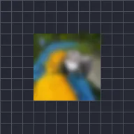

Vervaging binnen

Vervaagt het beeld binnen de laag en houdt de omtrek scherp.
Instellingen
| Instelling | Type | Bereik | Standaard |
|---|---|---|---|
| Sterkte | Getal | 0 tot 300 | 20 |

Vervaagt het beeld binnen de laag en houdt de omtrek scherp.
| Instelling | Type | Bereik | Standaard |
|---|---|---|---|
| Sterkte | Getal | 0 tot 300 | 20 |